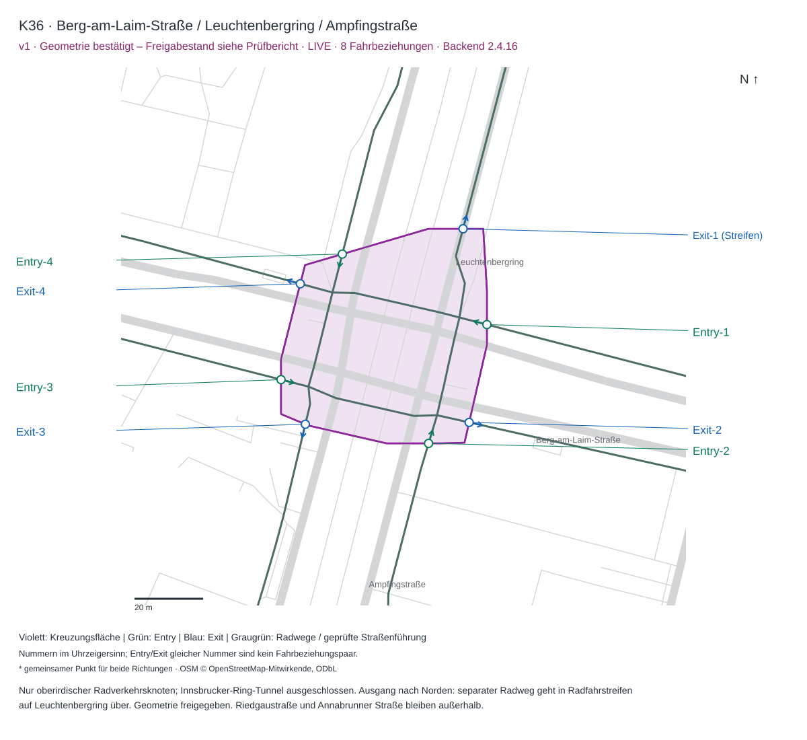
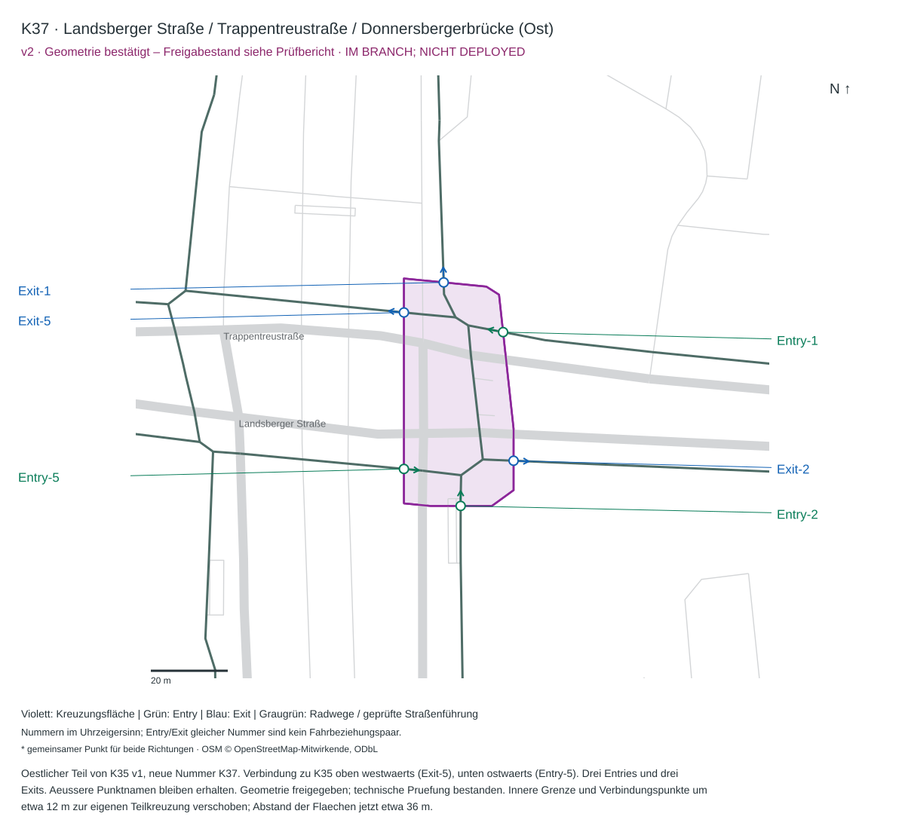

K34 v1 · Frankfurter Ring / Ingolstädter Straße
Vierarmiger oberirdischer Radweg-Knoten. Geometrie freigegeben. Die Brückenfahrbahn des Frankfurter Rings liefert keinen zusätzlichen Radverkehrsarm. Benachbarte Zufahrten bleiben außerhalb.

K34 bis K37 sind geometrisch freigegeben und technisch geprüft. Im lokalen Branch für Backend 2.4.16 aktiviert; noch nicht deployed. K35 West und K37 Ost bilden zwei getrennte Flächen. Brückenfahrbahnen, Kfz-Rampen und Tunnel bleiben ausgeschlossen. Bei K36 liegt der nördliche Exit auf einem Radfahrstreifen; dessen Punkt zeigt die OSM-Fahrbahnmittellinie. Entry/Exit gleicher Nummer bilden kein Fahrbeziehungspaar.
Gesamtübersicht · Kontaktübersicht
Vierarmiger oberirdischer Radweg-Knoten. Geometrie freigegeben. Die Brückenfahrbahn des Frankfurter Rings liefert keinen zusätzlichen Radverkehrsarm. Benachbarte Zufahrten bleiben außerhalb.
Westlicher Teil von K35 v1. Getrennte Flaeche; Verbindung zu K37 oben westwaerts (Entry-5), unten ostwaerts (Exit-5). Drei Entries und drei Exits. Aeussere Punktnamen bleiben erhalten. Geometrie freigegeben; technische Pruefung bestanden. Innere Grenze und Verbindungspunkte um etwa 12 m zur eigenen Teilkreuzung verschoben; Abstand der Flaechen jetzt etwa 36 m.

Nur oberirdischer Radverkehrsknoten; Innsbrucker-Ring-Tunnel ausgeschlossen. Ausgang nach Norden: separater Radweg geht in Radfahrstreifen auf Leuchtenbergring über. Geometrie freigegeben. Riedgaustraße und Annabrunner Straße bleiben außerhalb.

Oestlicher Teil von K35 v1, neue Nummer K37. Verbindung zu K35 oben westwaerts (Exit-5), unten ostwaerts (Entry-5). Drei Entries und drei Exits. Aeussere Punktnamen bleiben erhalten. Geometrie freigegeben; technische Pruefung bestanden. Innere Grenze und Verbindungspunkte um etwa 12 m zur eigenen Teilkreuzung verschoben; Abstand der Flaechen jetzt etwa 36 m.

OSM-Kartenausschnitte vom 16.11.2026 · © OpenStreetMap-Mitwirkende, ODbL.